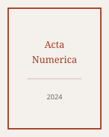
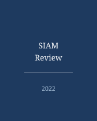

代表性论文
-

Organic fertilization co-selects genetically linked antibiotic and metal(loid) resistance genes in global soil microbiome
Nature Communications, 15 (2024): 5168.
-

Soil redox status governs within-field spatial variation in microbial arsenic methylation and rice straighthead disease
The ISME Journal, 18 (2024): wrae057.
-
Various microbial taxa couple arsenic transformation to nitrogen and carbon cycling in paddy soils
Microbiome, 12 (2024): 238.